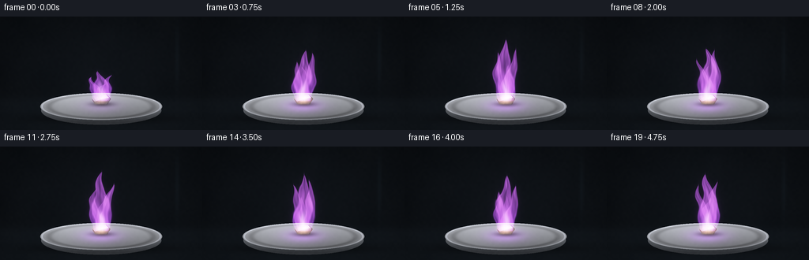
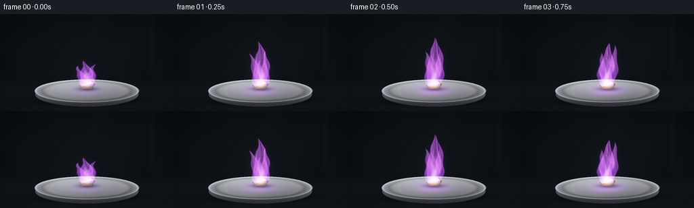

CODING AGENTS AS PIXEL WORLD MODELS
traex/GPT-6.1-Sol · phygen_130
点击播放 · 原生 RGB 像素
逐轮保存的候选
回放视频、检查图与代码变化。
每份候选均可单独播放。实际图片检查记录在下方工具轨迹中。
候选 01播放与检查图
点击播放 · 原生 RGB 像素


展开代码变化
--- 上一保存版本
+++ 本次保存版本
@@ -0,0 +1,211 @@
+"""Procedural, supersampled macro shot of a lilac potassium flame.
+
+Only mathematical textures, geometry, and local numpy/Pillow operations are used.
+"""
+from pathlib import Path
+import json
+import numpy as np
+from PIL import Image, ImageDraw, ImageFilter
+from scipy.ndimage import gaussian_filter, map_coordinates
+import artifact_io
+
+
+ROOT = Path(__file__).resolve().parent
+SPEC = json.loads((ROOT / 'task_spec.json').read_text())
+S = 3
+W, H = SPEC['width'] * S, SPEC['height'] * S
+Y, X = np.mgrid[0:H, 0:W].astype(np.float32) / S
+RNG = np.random.default_rng(130)
+
+
+def smooth_noise(w, h, seed):
+ r = np.random.default_rng(seed)
+ a = r.normal(size=(h, w)).astype(np.float32)
+ iy, ix = np.mgrid[0:H, 0:W].astype(np.float32)
+ return map_coordinates(a, [iy * (h-1)/(H-1), ix * (w-1)/(W-1)],
+ order=3, mode='reflect')
+
+
+texture = (smooth_noise(88, 50, 8) * .50 + smooth_noise(170, 95, 9) * .25)
+large = smooth_noise(12, 7, 3)
+
+
+def polygon_mask(points):
+ im = Image.new('L', (W, H))
+ ImageDraw.Draw(im).polygon([(round(x*S), round(y*S)) for x, y in points], fill=255)
+ return np.asarray(im, dtype=np.float32) / 255
+
+
+def ellipse_mask(box):
+ im = Image.new('L', (W, H))
+ ImageDraw.Draw(im).ellipse(tuple(round(v*S) for v in box), fill=255)
+ return np.asarray(im, dtype=np.float32) / 255
+
+
+def over(a, color, mask):
+ return a * (1-mask[..., None]) + np.asarray(color) * mask[..., None]
+
+
+def scene(t, heat):
+ # Soft black laboratory background, matte charcoal benchtop.
+ bg = np.zeros((H, W, 3), np.float32)
+ vignette = np.exp(-((X-130)/151)**2 - ((Y-73)/100)**2)
+ bg[:] = [0.023, .031, .040]
+ bg += vignette[..., None] * np.array([.036, .043, .052])
+ bench = 1/(1+np.exp(-(Y-104)/2.9))
+ bg += bench[..., None] * np.array([.018, .023, .027])
+ bg += (large*.0018 + texture*.0012)[..., None]
+ # A very defocused vertical glint of lab glass, not an additional subject.
+ glint = np.exp(-((X-224)/2.8)**2-((Y-51)/35)**2)
+ bg += glint[..., None] * np.array([.013, .020, .024])
+ shadow = np.exp(-((X-128)/76)**2 - ((Y-129)/6.2)**2)
+ bg *= 1-.62*shadow[..., None]
+
+ # Shallow porcelain evaporating dish, viewed nearly at bench level.
+ side = ellipse_mask((52, 101, 204, 137))
+ shade = np.clip((134-Y)/28, 0, 1)
+ sidecol = np.stack([.18+.28*shade, .19+.29*shade, .205+.30*shade], axis=-1)
+ sidecol += texture[..., None]*.005
+ bg = over(bg, sidecol, side)
+ top = ellipse_mask((51, 97, 205, 131))
+ rho = np.sqrt(((X-128)/77)**2 + ((Y-114)/17)**2)
+ light = .58 + .19*np.clip((114-Y)/20, -.7, 1) + .07*np.exp(-((X-89)/45)**2)
+ light -= .12*np.exp(-((rho-.86)/.06)**2)
+ topcol = light[..., None]*np.array([.94,.955,.99])
+ topcol += texture[..., None]*.003
+ # Lilac flame casts a local reflection on the curved ceramic interior.
+ refl = heat*np.exp(-((X-128)/24)**2-((Y-113)/8)**2)
+ topcol += refl[..., None]*np.array([.23,.065,.34])
+ bg = over(bg, topcol, top)
+ rim = np.exp(-((rho-.973)/.012)**2)*top
+ bg += rim[..., None]*np.array([.16,.17,.19])
+ # Soft grounded shadow and oxide flecks around the small metal sample.
+ sh = np.exp(-((X-129)/14)**2-((Y-111)/3.2)**2)
+ bg *= 1-.58*sh[..., None]
+ for i in range(15):
+ r = np.random.default_rng(240+i)
+ cx = 128+r.uniform(-17,17)
+ cy = 110+r.uniform(-2,3)
+ spot = np.exp(-((X-cx)/r.uniform(.18,.5))**2-((Y-cy)/.22)**2)
+ bg = over(bg, [.52,.50,.53], spot*.45)
+
+ # Irregular, oxidizing potassium chip with faceted silver-gray top.
+ shrink = 1-.075*t/4.75
+ def points(p):
+ return [(128+(x-128)*shrink, 110+(y-110)*shrink) for x,y in p]
+ facets = [
+ ([(116,104),(122,99),(135,99),(140,104),(136,111),(120,111)], [.28,.29,.32]),
+ ([(116,104),(122,99),(130,100),(127,105),(120,108)], [.66,.67,.69]),
+ ([(122,99),(134,99),(138,103),(127,105),(130,100)], [.80,.80,.81]),
+ ([(127,105),(138,103),(140,105),(135,111),(126,111)], [.36,.37,.40]),
+ ([(120,108),(127,105),(126,111),(120,111),(117,106)], [.45,.44,.45])]
+ for p,c in facets:
+ m = polygon_mask(points(p))
+ rough = texture*.020 + large*.015
+ col = np.asarray(c)[None,None,:] + rough[...,None]
+ edgeheat = heat*np.exp(-((Y-106.3)/4)**2-((X-128)/12)**2)
+ col += edgeheat[...,None]*np.array([.26,.035,.11])
+ bg = over(bg,col,m)
+ # Tiny irregular highlight edges: the chip remains tangible under the flame.
+ lines = Image.new('L',(W,H))
+ d=ImageDraw.Draw(lines)
+ for line in [[(118,103),(122,100),(131,100)],[(128,105),(135,103)],[(120,109),(124,109)]]:
+ d.line([(int(x*S),int(y*S)) for x,y in points(line)],fill=180,width=1)
+ lm=np.asarray(lines,dtype=np.float32)/255
+ bg = over(bg,[.86,.78,.85],lm*.55)
+ return np.clip(bg,0,1)
+
+
+def flame(t):
+ # Advected analytic turbulent fields. Shared terms keep all tongues coherent.
+ ignition = .50+.50*(1-np.exp(-t*4.5))
+ pulse = 1+.055*np.sin(6.1*t)+.035*np.sin(11.9*t+.8)
+ basey = 106.5
+ elev = basey-Y
+ u = (X-128)/15
+ v = elev/29
+ turbulence = (
+ .52*np.sin(2.7*u+3.0*v-4.5*t+1.2*np.sin(2.1*v-2.6*t))
+ + .26*np.sin(7.2*u-5.1*v+6.1*t)
+ + .13*np.sin(14.4*u+9.4*v-10.7*t)
+ + .065*np.sin(27.1*u-17.2*v+17*t))
+ total = np.zeros((H,W),np.float32)
+ # Main mantle and thin secondary tongues, rising and merging naturally.
+ lobes=[(0,72,10.0,.0,1.0),(-5.7,55,5.9,-5.0,.78),
+ (5.0,63,6.2,6.0,.86),(-1.0,45,5.0,2.0,.54)]
+ for j,(origin,height,width,drift,strength) in enumerate(lobes):
+ height *= ignition*pulse*(1+.055*np.sin(5.3*t+j*1.6))
+ z=elev/height
+ zz=np.clip(z,0,1)
+ center=128+origin + drift*zz
+ center += zz**1.1*(3.5*np.sin(5.2*zz-4.1*t+j*.75)
+ +1.8*np.sin(11*zz-6.3*t+j))
+ # Width starts narrow at the fuel and pinches to a fluid tip.
+ wid=width*(1-zz)**.61*(.67+.70*np.sin(np.pi*zz))
+ wid*=1+.12*np.sin(13*zz-6*t+j)
+ dx=(X-center)/(wid+.25)
+ potential=1-dx*dx + .34*turbulence
+ cut=(1/(1+np.exp(np.clip(-(1-z)*75,-60,60))))
+ cut*=1/(1+np.exp(np.clip(-elev*2,-60,60)))
+ # Emitting wrinkled flame surfaces around a less luminous volume.
+ mantle=np.exp(-((potential-.18)/.31)**2)*.45
+ volume=np.clip(potential,0,1.4)*.60
+ d=(mantle+volume)*cut
+ if j == 0:
+ # A darker rising channel prevents the flame becoming a solid blob.
+ channel=np.exp(-((dx-.05-.15*np.sin(zz*15-t*6))/.26)**2)
+ d*=1-.65*channel*np.clip((zz-.25)*2.5,0,.8)
+ d*=.79+.21*np.sin(9*zz-6*t+2.4*dx+j)**2
+ total += d*strength
+ hot=np.exp(-((X-128)/7.0)**2-((Y-104.1)/4.5)**2)*ignition
+ # Lilac is the characteristic potassium emission, not an orange campfire.
+ upper=np.clip(elev/38,0,1)
+ radiance=total[...,None]*np.stack([
+ 1.34+.25*upper,
+ .40+.16*upper,
+ 2.28-.12*upper],axis=-1)
+ radiance+=hot[...,None]*np.array([2.7,1.80,.77])
+ # Small pale inner flame near the surface and violet translucent outer mantle.
+ inner=np.exp(-((X-128-1.4*np.sin(elev*.23-t*5))/3.3)**2)
+ inner*=np.exp(-((elev-11)/10)**2)*np.clip(elev,0,1)*ignition
+ radiance+=inner[...,None]*np.array([.84,.74,.92])
+ return radiance, total, ignition
+
+
+def make_frame(i):
+ t=i/SPEC['fps']
+ rad,density,heat=flame(t)
+ bg=scene(t,heat)
+ # A restrained wisp of white potassium-oxide smoke rises above the flame.
+ sy=95-Y
+ z=np.maximum(sy,0)
+ sc=131+z*.12+3*np.sin(z*.07-t*1.4)
+ smoke=np.exp(-((X-sc)/(3+z*.12))**2)
+ smoke*=np.exp(-((sy-76)/38)**2)*np.clip((sy-45)/25,0,1)
+ smoke*=.017*(.7+.3*np.sin(sy*.16-t*3)**2)*heat
+ bg=over(bg,[.35,.34,.42],smoke)
+ # Optical halo is several stops weaker than the resolved flame itself.
+ bloom=gaussian_filter(rad,sigma=(3.0*S,3.0*S,0))*.105
+ bloom+=gaussian_filter(rad,sigma=(8.5*S,8.5*S,0))*.036
+ rgb=1-(1-bg)*np.exp(-(rad+bloom))
+ # Very fine fixed film grain; supersampling resolves ceramic and flame detail.
+ rgb+=texture[...,None]*.0017
+ rgb=np.uint8(np.clip(rgb,0,1)*255+.5)
+ return np.asarray(Image.fromarray(rgb).resize((SPEC['width'],SPEC['height']),Image.Resampling.LANCZOS))
+
+
+def main():
+ frames=np.stack([make_frame(i) for i in range(SPEC['frames'])])
+ artifact_io.save(frames,ROOT)
+ # Standard RGB MP4 companion, in addition to the required lossless artifacts.
+ try:
+ import imageio.v2 as imageio
+ imageio.mimwrite(ROOT/'video.mp4',frames,fps=SPEC['fps'],codec='libx264',
+ quality=9,macro_block_size=1,pixelformat='yuv420p')
+ except ImportError:
+ pass
+ print(f'Saved {len(frames)} RGB frames of shape {frames.shape[1:]} at {SPEC["fps"]} fps.')
+
+
+if __name__=='__main__':
+ main()
可观测工具轨迹
实际执行的命令与返回图片。
命令 1exit 0
/bin/bash -lc 'ls -la && cat prompt.txt && cat GENERATION_RULES.md && cat task_spec.json'
命令 2exit 0
/bin/bash -lc "cat artifact_io.py && python - <<'PY'
import numpy, PIL
print('numpy/PIL available')
PY"命令 3exit 0
/bin/bash -lc "python - <<'PY' import importlib.util for s in ['scipy','imageio','imageio_ffmpeg']: print(s, bool(importlib.util.find_spec(s))) PY"
命令 4exit 0
/bin/bash -lc "python generate.py && ls -lh pixels.npz video.mp4 index.html inspection.png && python - <<'PY'
from PIL import Image
import numpy as np
import json
from pathlib import Path
p=np.load('pixels.npz')['pixels']
assert p.shape==(144,256,20)
f=np.asarray(Image.open('frames/10.png'))
print('Validated packed video:',p.shape,'frame:',f.shape, f.dtype)
print('Flame peak RGB:', f[35:105,109:148].max(axis=(0,1)).tolist())
print('Frame count:',len(list(Path('frames').glob('*.png'))))
PY"保存候选 1 份；完成命令 4 次；可验证图片返回 0 张。原始 API 响应与完整日志保留在本地。